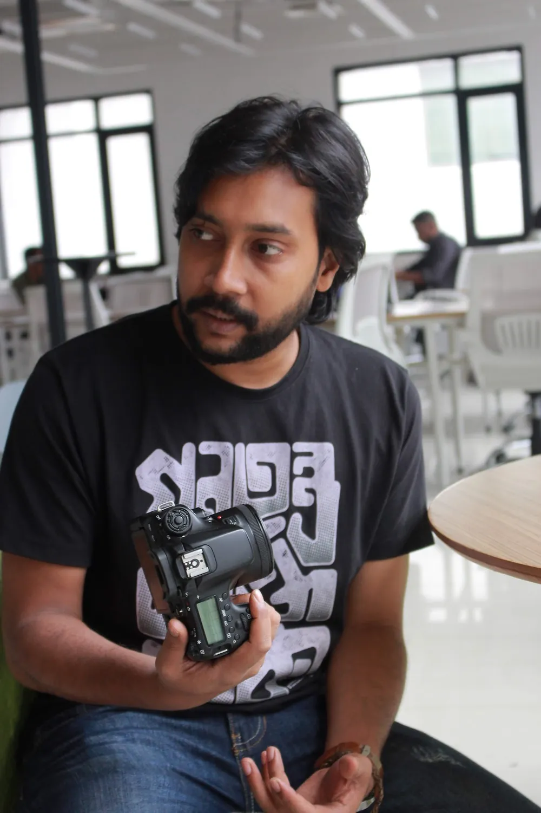
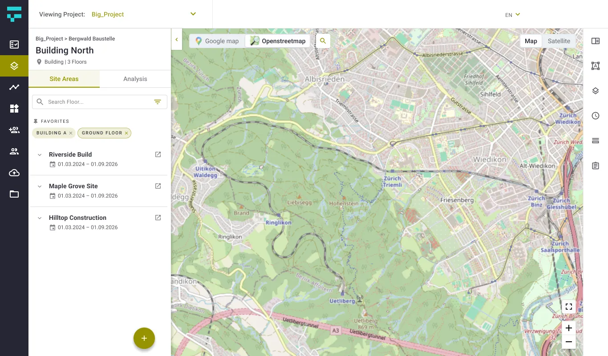

The story · 5 frames
Everything I've made has been a frame.
From a village window in Bangladesh to enterprise products in Europe. The short version is below; the full story has its own page.
-

Frame 01Childhood
A village window
Narikelbari, Bangladesh. Before I knew anything about design, I knew how to look.
-

Frame 022013
My first interface
DVD menus for Tareque Masud's Adam Surat, designed before I knew to call them interfaces.
-

Frame 032016 – 2019
Many screens, one language
Intern to UX Engineer at SELISE: insurance, finance, telecom and IoT products.
-
Frame 042019 – 2021
Kolkata, through a lens
A Master's in film on an ICCR scholarship. A camera taught me to cut, and design is mostly cutting.
-

Frame 052022 – now
Systems, teams, and AI
Leading a design unit, moving to France, and building what I design.